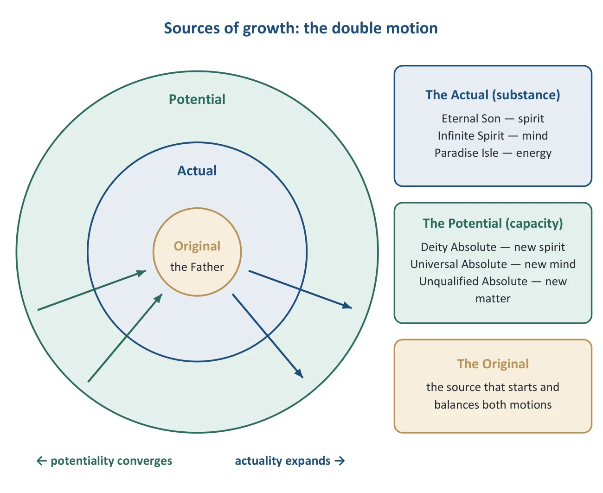
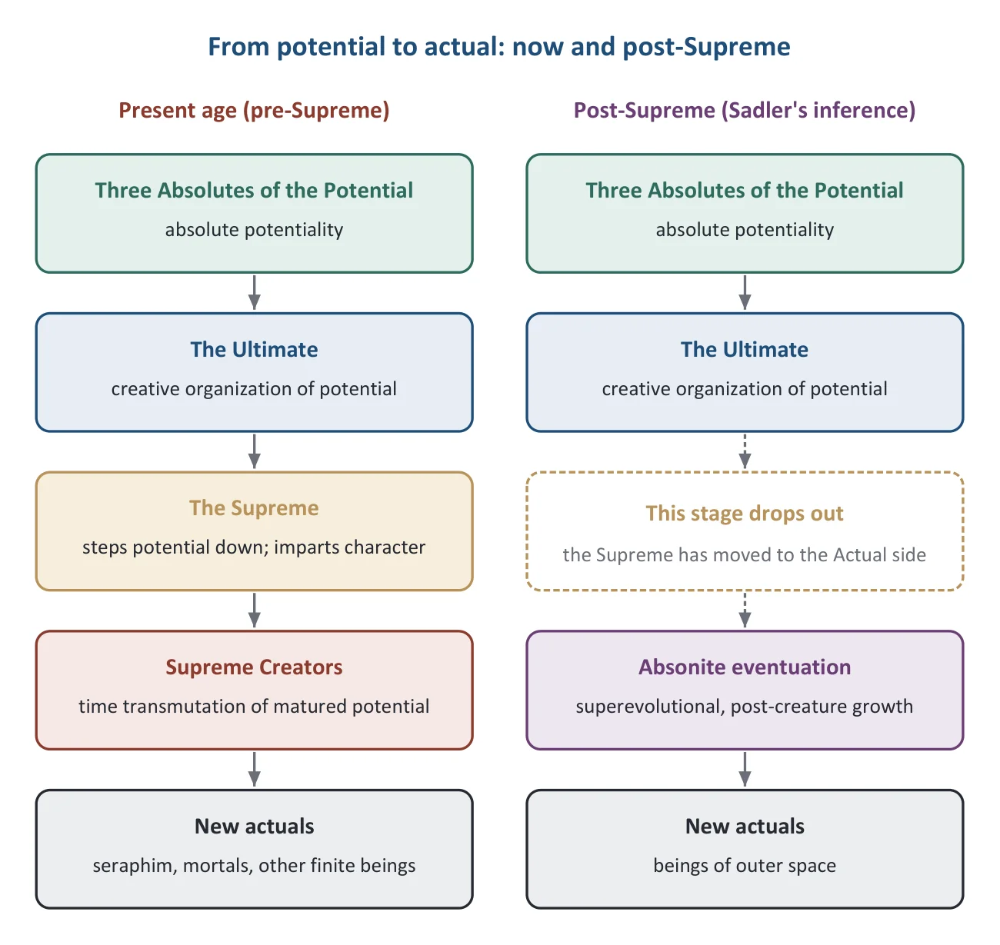

Original: Apéndice VII, Mecanismos del crecimiento experiencial (pp. 234–248)
La realidad existencial no crece por sí misma; la realidad experiencial sí. En este apéndice Sadler se pregunta de dónde procede el crecimiento y por qué camino llega finalmente hasta nosotros. Todo lo nuevo surge del Potencial y es captado por los circuitos de gravedad del Actual, y entre ambos el Último y el Supremo reducen la potencialidad absoluta a una magnitud que los seres finitos pueden utilizar. El crecimiento en la edad presente no puede separarse del crecimiento del Ser Supremo, y Sadler espera que, una vez completado el Supremo, comience en los niveles del espacio exterior un tipo de crecimiento completamente distinto.
Las Deidades eternas del Paraíso no tienen ya nada hacia lo que crecer, pues ya son todo lo que son. Lo que crece es la realidad experiencial, y el crecimiento experiencial implica siempre a dos participantes: tiene lugar cuando el creador y la criatura trabajan juntos. En cierto sentido es además contagioso, pues puede extenderse hacia fuera y suscitar crecimiento incluso dentro de la realidad existencial, que por sí sola nunca crece.
Con esto en mente, Sadler divide la historia del universo maestro en periodos según la manera en que se produce el crecimiento.
| Mecanismo | Periodo | Carácter |
|---|---|---|
| Mecanismo existencial | Primera edad del universo (la edad de Havona) | Sin crecimiento. Havona apareció en la eternidad sin ninguna obra de los organizadores de fuerza |
| Crecimiento experiencial presupremo | La edad presente (superuniversal) | Crecimiento evolutivo finito mientras la poder-personalización del Supremo sigue incompleta |
| Crecimiento experiencial post-supremo | La edad del espacio exterior | Crecimiento posterior a la emergencia del Ser Supremo; Sadler espera que se extienda por todo el universo maestro |
| Mecanismo existencial-experiencial | La edad post-última | Crecimiento más allá de los niveles subabsolutos; caracteriza al Cosmos Infinito |
El razonamiento de la primera fila es el siguiente. Los universos del tiempo y del espacio comienzan cuando los organizadores de fuerza empiezan a manipular la potencia espacial del Absoluto No Cualificado. Sin embargo, nada sugiere que ni los organizadores de fuerza ni el Absoluto No Cualificado tuvieran parte alguna en la aparición física del universo central. De ello se sigue que nuestra manera actual de crecer no actuaba en la edad de Havona, conclusión que Sadler arrastra de sus apéndices anteriores.
La segunda manera de crecer tiene dos formas: el crecimiento presupremo que se está produciendo ahora en los superuniversos, y el crecimiento post-supremo que se desplegará en el espacio exterior después de que el Ser Supremo haya emergido. Sadler sostiene que ambos alcanzan también a Havona. Havona forma parte del gran universo y del universo maestro, y por eso con la apertura de la segunda edad comenzó a participar en el ciclo de crecimiento. La tercera manera es una que Sadler supone que entrará en funcionamiento solo después de que el universo maestro esté terminado y el Último haya emergido. El libro de Urantia no le da nombre, y debe leerse enteramente como hipótesis suya.
Toda realidad experiencial deriva en último término de los siete Absolutos de la infinidad. El documento 115 reagrupa estos siete bajo tres epígrafes, a saber, el Original, el Actual y el Potencial. Solo la Primera Fuente y Centro constituye el Original; el Actual es la triodidad del Hijo Eterno, el Espíritu Infinito y la Isla del Paraíso; el Potencial es la triodidad del Absoluto de Deidad, el Absoluto No Cualificado y el Absoluto Universal.
La interasociación de lo Original, lo Actual y lo Potencial produce las tensiones dentro de la infinidad dando como resultado la posibilidad de crecimiento de todo el universo; y el crecimiento es la naturaleza del Séptuple, el Supremo y el Último.115:3.9
Lo que llama la atención de Sadler es la imagen que da el texto de las dos triodidades moviéndose en direcciones opuestas.
La actualidad existe en el centro mismo y se expande desde allí hacia la infinidad periférica; la potencialidad viene hacia adentro desde la periferia de la infinidad y converge en el centro de todas las cosas.115:3.12
El Actual es también el triple centro de gravedad del espíritu, la mente y la energía. El espíritu se centra en el Hijo Eterno, la mente en el Espíritu Infinito y la energía física en la Isla del Paraíso. Todo lo que ya se ha vuelto actual queda sostenido en uno o más de estos tres circuitos de gravedad. Los tres Absolutos del Potencial, en cambio, son los manantiales inagotables de los que surgen el nuevo espíritu, la nueva mente y la nueva materia. El Original no pertenece a ninguno de los dos grupos. Él es la fuente de ambos, el que pone en marcha su doble movimiento y lo mantiene en equilibrio.

El crecimiento, por tanto, no consiste en sacar algo de la nada. Como dice Sadler, de la nada solo sale nada. El crecimiento es una especie de transacción en la que la realidad pasa del nivel de lo potencial al nivel de lo actual.
La dinámica final del cosmos tiene que ver con la transferencia continua de la realidad desde potencialidad a la actualidad.115:3.16
Para el espíritu y para la materia, Sadler encuentra este camino trazado con bastante claridad en el texto. El espíritu sale de la potencialidad del Absoluto de Deidad y es captado por la gravedad espiritual del Hijo Eterno; la fuerza cósmica sale de la presencia espacial del Absoluto No Cualificado y es captada por la gravedad del Paraíso. Añade con franqueza que la exposición sobre la mente es menos nítida. El circuito mental del Actor Conjunto es fiable, pero no todas las reacciones mentales pueden preverse, y el texto menciona el funcionamiento del Absoluto Universal como una de las razones [9:6.8].
Surge ahora una dificultad. Los tres Absolutos del Potencial son, literalmente, absolutos. Pero el crecimiento del universo maestro es un proceso subabsoluto, que tiene lugar en los niveles finito y absonito.
Los tres Absolutos de la potencialidad son operativos en un nivel puramente eterno del cosmos, por lo tanto no funcionan nunca como tales en los niveles subab solutos.115:3.13
Alguien, por tanto, debe reducir la potencialidad absoluta a una escala que los seres subabsolutos puedan manejar. Sadler concluye que esta tarea corresponde al Último y al Supremo. En todo el universo maestro es el Último quien integra «la organización creativa» de los Absolutos de potencialidad [12:6.13], y el Supremo se convierte en el canal por el que este potencial organizado desciende al nivel finito [117:3.2]. Solo el potencial madurado de este modo se pone en manos de los creadores del tiempo y del espacio. Visto desde un ángulo más amplio, por tanto, todo acto de creación es también un acto de transformación.
Los Hijos Creadores que salen del Paraíso son, en actualidad, creadores transformadores en el sentido cósmico.118:4.7
Un transformador eléctrico hace fácil de captar la idea. La corriente de alta tensión de una central eléctrica no puede llevarse directamente a una casa; debe pasar por una serie de subestaciones, cada una de las cuales reduce el voltaje, antes de que pueda encenderse una lámpara. En el cuadro de Sadler, los Absolutos son la central, el Último y el Supremo son las subestaciones, y los Hijos Creadores junto con sus consortes, los Espíritus Creativos, son las manos que usan la corriente para hacer algo real.
Su ejemplo son los serafines.
Los serafines han sido creados por el Espíritu Materno Universal y proyectados en formaciones de unidades —de 41.472 por vez— desde la creación de los «modelos originales de ángeles» y de ciertos arquetipos angélicos en los primeros tiempos de Nebadon.38:1.1
En un momento no hay nada; al siguiente, 41.472 serafines están donde nada había. Sin embargo, no vinieron de ninguna parte ni fueron hechos de la nada. Según la lectura de Sadler, el «qué» era potencial madurado, y el «dónde» era la presencia del Supremo, en la que ese potencial se había mantenido dispuesto. Añade la salvedad de que el Espíritu Infinito y los Espíritus Rectores también participan, de algún modo, en esta maduración, como cuando la fuerza física madura, a través de la energía, en poder universal.
El Último y el Supremo hacen algo más que reducir la escala del potencial; lo revisten de su propio carácter. El potencial que madura reposa en la omnipresencia del Último en el universo maestro y en la omnipresencia del Supremo en el gran universo antes de volverse actual.
El Ser Supremo no creó al hombre, pero el hombre fue literalmente creado de la potencialidad del Supremo y su vida misma fue derivada de ella.117:3.12
Sadler lo compara con los superuniversos. Cada superuniverso está impregnado de la naturaleza del Espíritu Rector que lo preside, y sus nativos llevan esa impronta toda su vida.
En lo que se refiere a los siete superuniversos, cada criatura nativa, hombre o ángel, llevará por siempre esta marca de identificación natal.16:5.2
El mismo principio actúa un nivel más arriba. El Supremo matiza todo crecimiento en el gran universo, y el Último matiza todo crecimiento en el universo maestro. Aquí, sugiere Sadler, está la razón por la que las criaturas finitas llegan al fin a parecerse al Supremo.
Para entender nuestro propio crecimiento debemos entender el crecimiento del Ser Supremo. Reuniendo afirmaciones de los documentos 115 y 118, Sadler expone tres componentes del Supremo. Su persona espiritual deriva de la Trinidad del Paraíso; su poder todopoderoso deriva de los éxitos de divinidad de Dios el Séptuple; y ambos están unidos por la mente suprema otorgada por el Actor Conjunto. El material a partir del cual crece el Supremo, sin embargo, procede de las dos triodidades.
El Supremo es antes que nada una persona espiritual, y esta persona espiritual surge de la Trinidad. Pero el Supremo es en segundo término una Deidad de crecimiento —crecimiento evolucionario— y este crecimiento deriva de las dos triodidades: la actual y la potencial.115:4.2
El Supremo vive, pues, dentro de un doble movimiento: se expande hacia el Potencial del espacio exterior y se concentra hacia el Actual del centro. Toda la realidad finita está en crecimiento dinámico entre estos dos polos [115:4.6].
Sadler da luego un paso más y razona que toda forma de crecimiento en la edad presente es posible porque el Supremo está aún incompleto. Que podamos hacer elecciones imperfectas y acumular así experiencia se debe a que somos participantes en Su crecimiento.
El vacío tiene sus virtudes, porque puede ser llenado experiencialmente.117:2.8
Un crecimiento de esta clase pertenece solo a la segunda edad. Comenzó con el inicio del crecimiento del Supremo y cesará cuando ese crecimiento cese; no existió en la edad de Havona ni existirá en la edad del espacio exterior. El crecimiento evolutivo, observa Sadler, es una condición muy temporal en la larga historia del universo maestro.
En algún momento del futuro eterno, la evolución de la Deidad Suprema se tornará un hecho completado de la historia universal, y la oportunidad de participar en esta extraordinaria experiencia habrá pasado de la etapa de acción cósmica.31:10.12
¿Participa hoy todo ser del gran universo en el crecimiento del Supremo? La respuesta de Sadler es: en su mayoría, pero no sin excepciones. Clasifica a los habitantes del gran universo en cuatro clases según su relación con el crecimiento.
| Clase | Seres incluidos | Crecimiento actual |
|---|---|---|
| Estado de la edad anterior | Seres de origen trinitario y sus asociados abrazados por la Trinidad (Consejeros Divinos, Mensajeros Poderosos y otros) | Sin crecimiento |
| Estado de la edad presente | Mortales, seres intermedios, serafines; Hijos y Espíritus de los universos locales; nativos de Havona en la segunda edad | Crecen con el Supremo |
| Estado de las edades post-supremas | Hijos trinidizados por criaturas | No crecen ahora; se mantienen en reserva |
| Estado de la edad post-última | Hijos Trinidizados de Destino | Retirados de la actividad del gran universo, residen en Vicegerington |
Para la primera clase, el testimonio de un Mensajero Poderoso habla directamente.
Una cosa es segura: nuestro estado está fijado por el abrazo de la Trinidad, y la experiencia ya no eventúa en crecimiento.117:2.4
La tercera clase está formada por seres que viven dentro de la edad presente sin pertenecer a ella. El libro de Urantia los describe como mantenidos en reserva para la edad venidera [117:2.3]. La cuarta clase se retoma en el Apéndice VIII. Tomadas en conjunto, las cuatro clases muestran cuatro modos de crecimiento que se superponen en la edad presente: el patrón de Havona, que no crece; el patrón de la segunda edad, que crece con el Supremo; el patrón post-supremo, que espera la edad siguiente; y el patrón post-último, que se mantiene completamente al margen de los asuntos de los universos presentes.
En la primera edad Havona no creció en absoluto. En la segunda edad, sin embargo, al entrar en relación con el gran universo, adoptó algunos de los rasgos del crecimiento evolutivo superuniversal [24:7.9]. Sadler usa este cambio como pista para anticipar lo que sucederá cuando se cierre la edad presente y se abra la edad del espacio exterior.
Su argumento es el siguiente. La condición estática de la Havona eterna se rompió cuando Dios, por libre albedrío, puso en marcha un ciclo de crecimiento. En respuesta aparecieron los potenciales del Supremo y la presencia de Deidad del Último se situó en su lugar. Este es el mecanismo de crecimiento experiencial que hoy está en funcionamiento, y es lo que subyace al funcionamiento actual de la Deidad Total en siete niveles [0:1.3]. La propuesta de Sadler es que, cuando el Ser Supremo haya emergido, estos siete niveles cambiarán también.
| Nivel | Presente | Post-supremo |
|---|---|---|
| 1–4 | Estático, potencial, asociativo, creador | Sin cambio |
| 5 | Evolutivo | Superevolutivo |
| 6 | Supremo | Post-supremo |
| 7 | Último | Sin cambio |
Como fundamento del cambio en el quinto nivel, Sadler señala la descripción que da el texto del crecimiento trascendental.
Lo que es trascendental no es necesariamente algo que no se desarrolla, pero es superevolucional en el sentido finito;105:7.2
El cambio en el sexto nivel es más profundo. Sadler habla aquí de un «libro de cuentas cósmico» (cosmic ledger). Una columna del libro registra el Potencial y la otra el Actual. En el presente el Supremo trabaja del lado del Potencial: aún está creciendo, y dentro de Su presencia condiciona el potencial y lo reduce. Pero una vez completada Su emergencia, el Supremo pasa al lado del Actual y se une allí al Hijo Eterno y al Espíritu Infinito. Ya no reduce el potencial, sino que trabaja directamente con el potencial que el Último ha organizado creativamente.

Como resultado, una etapa desaparece del proceso de maduración. El principio del crecimiento sigue siendo el mismo, pero cambia su método: ya no la evolución experiencial en el nivel finito, sino la emanación experiencial en el nivel absonito [115:2.4]. Sadler lo llama crecimiento posfinito, poscriatural y post-supremo, y lo define como crecimiento trascendental dirigido hacia el estado último.
Según Sadler, al menos una cosa está clara acerca del crecimiento post-supremo: no se parecerá al crecimiento tal como lo experimentamos ahora.
No sabemos qué tipo de crecimiento caracterizará a los universos del espacio exterior. Pero estamos muy seguros de que será algo muy distinto de todo lo que se ha visto en la edad presente de la evolución de los siete superuniversos.117:2.6
Los ciudadanos del espacio exterior no tendrán experiencia finita [31:10.11]. Crecerán teniendo como premisa al Ser Supremo completado, pero no participarán en Su crecimiento [117:2.7]. Sadler ofrece aquí una comparación memorable. Antes de que llegara Grandfanda, a un nativo de Havona le habría resultado difícil imaginar una criatura evolutiva; del mismo modo, probablemente no podremos representarnos el crecimiento de los habitantes del espacio exterior hasta que los encontremos de verdad.
Aun así, este futuro no es un asunto lejano para los finalistas mortales. El libro de Urantia atribuye siete dimensiones a la personalidad mortal.
Estos fenómenos dimensionales son realizables como tres en el nivel finito, tres en el nivel absonito, y uno en el nivel absoluto.112:1.9
Sadler interpreta el crecimiento presente dentro del Supremo como la realización de las tres primeras dimensiones, y el crecimiento post-supremo como el despliegue de las tres siguientes, que la edad presente no tiene medios de expresar.
El crecimiento posterior al Último queda fuera del alcance de este apéndice, que trata de los mecanismos del crecimiento experiencial. Sadler lo llama mecanismo existencial-experiencial y lo remite a los Apéndices XX y XXVII. Sí esboza brevemente su carácter. Puesto que el Último se sitúa en los «niveles creativos finales» [0:2.17], el crecimiento más allá de Él debe ser supercreativo; debe pasar más allá de los niveles absonitos, donde el tiempo y el espacio son trascendidos, a los niveles absolutos, que no conocen ni tiempo ni espacio. Su lugar es el nivel coabsoluto descrito en el documento 106, donde los experienciales se proyectan sobre un campo más allá del universo maestro [106:0.7].
Sadler espera que los finalistas participen incluso en este futuro remoto. La fusión con el Ajustador confiere «una fase de la absolutez potencial cualificada» [112:7.1], y la personalidad mortal posee una séptima dimensión capaz de aproximarse a lo absoluto. El apéndice concluye con el pasaje siguiente.
Aunque se limita definitivamente la gama metamórfica de la realidad no personal, no conocemos limitación alguna en la evolución progresiva de las realidades de la personalidad.0:5.2
Varias de las referencias de párrafo que da Sadler en este apéndice son erróneas. Las definiciones del Original, el Actual y el Potencial se encuentran en el documento 115, sección 3 (115:3.6–13), mientras que el original cita en varios lugares la sección 5 de ese documento. El pasaje que llama a los Hijos Creadores «creadores transformadores» es 118:4.7 (el original tiene 118:7.7), y la admisión del Mensajero Poderoso es 117:2.4. En el resumen, «112:6.6» y «112:6.13» son lapsus por 12:6.6 y 12:6.13. Este libro corrige estas referencias conforme al texto al citarlas.